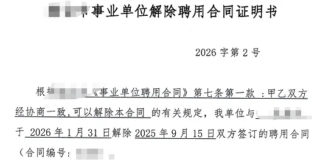

辞去事业编，安心做会教程
原文：https://mp.weixin.qq.com/s?__biz=MzAwMzIzOTk5OQ==&mid=2247535015&idx=1&sn=5f8c55d6233225080fe4b5bf8da36de0&chksm=9b3c30f7ac4bb9e14c6c335ddf259ab38916ccb835bf9c4912cca8f864277014893c84b23811#rd 合集：漫谈胡侃
其实纠结了有一阵了，自打入职以来，突然觉得自己就是生信鸡排哥。每天活在“搞完你的搞你的，搞完你的搞你的”节奏中，精神和肉体都疲于奔命。虽然25年的大部分课程已经不由我主讲，但一方面无论是教学计划、教案、代码流程也都还需要我去校验并与生信基地的小伙伴们反复商讨、优化、把控质量。另一方面很多用户也还是希望看到由Biomamba输出的教程与视频(虽然我一直觉得我们现有讲师其实授课内容比我要更系统，毕竟我现在才是兼职人员)。疲于应付各项事务也让我在逐渐失去创造力、失去灵感，更没有时间学习新工具、算法、思路，完全没有提升自己的机会；深深的陷入了平庸的恐惧之中。这些充分让我意识到既要、又要、还要是不现实的。所以，也不管什么编制和副高职称了，索性一并辞了，先回归到教学岗位中，这才是我的舒适圈，也能帮助到更多的生信爱好者。所以，大家后面希望看到什么教程，可以在评论区或者给客服留言啦~

当然，大概率在生信基地相关事宜稳定后，我还是会寻求一份科研岗位。如果有哪位的课题组需要一个生信分析的工具人，不妨考虑考虑我，除了我本人外，我们还配备有科研助理和生信讲师，能够为课题组做出产学研的全方位贡献。而我需要的是一份可以高效科研、不坐班的岗位。形式当然也可以多样一些，兼职/客座offer、科研合作、商务合作都十分欢迎给我一个橄榄枝

一、基本信息
姓名 ：Biomamba
性别 ：男
出厂年份 ：1998年3月
二、学历学位
- 2025.06 获中国药科大学，微生物与生化药学专业理学博士学位
三、科研成果
四、获奖情况
- 优秀毕业生，2025年
- 博士研究生国家奖学金，2022、2024年
- 博士研究生优秀奖学金，2022、2024年
- 博士研究生学业奖学金，2021-2025年
- 三好学生，2022年、2024年
五、技能/自评 1.生信分析技能：有SCI论文发表的有Bulk/scRNA-seq、空间转录组、WGBS、16s rDNA-seq、Metagenomics、Metabonomics。熟练掌握R语言、Python、Linux系统操作、shinyAPP制作，以上组学也都可以开展教学活动，其它分析流程可以学。2.实验技能：无3.实践技能：创立并运营了全网超10w粉丝，教程点击量超千万的生信自媒体"Biomamba 生信基地"。4.自我评价：拥有较好的沟通能力，实验室996抗压王者，具有一定的独立科研能力。 六、求职意向
求职地点 ：江浙沪包邮区，南京最佳
求职意向 ：国内外科研、企业工作岗位
七、联系方式 wchcpu2019@163.com

如何联系我们

 留一个领取资料、开箱即用的单细胞分析镜像的微信号[Biomamba_zhushou]，方便各位随时交流。同时我们也构建了交流群矩阵，欢迎大家入群讨论。
大家可以阅读完这几篇之后添加给生信入门初学者的小贴士
没有检索，就没有发言权
留一个领取资料、开箱即用的单细胞分析镜像的微信号[Biomamba_zhushou]，方便各位随时交流。同时我们也构建了交流群矩阵，欢迎大家入群讨论。
大家可以阅读完这几篇之后添加给生信入门初学者的小贴士
没有检索，就没有发言权
已有生信基地联系方式的同学无需重复添加

 您点的每个赞和在看，我都认真当成了喜欢
您点的每个赞和在看，我都认真当成了喜欢